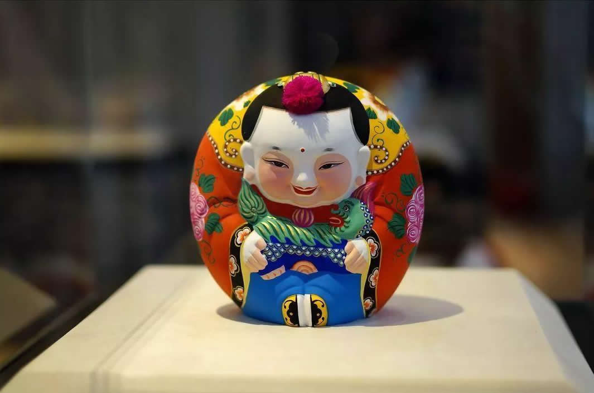
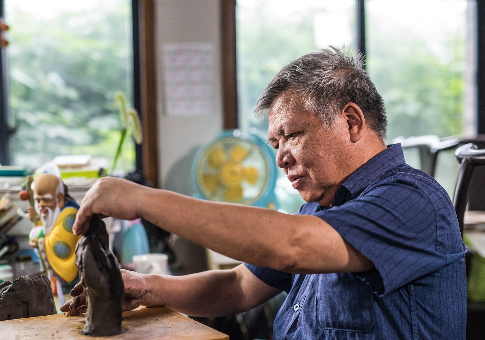

|  | 惠山泥人 |
历史背景无锡惠山泥人起源于江苏省无锡市惠山古镇，最早可以追溯到明末。著名散文家张岱在《陶庵梦忆》中提到过惠山泥人的存在。清代时，惠山泥人逐渐发展成为一种重要的民间艺术，受到皇帝的赞赏，成为贡品。惠山泥人曾在清朝乾隆年间受到广泛认可，成为当地特产之一。 制作材料与工艺惠山泥人主要使用惠山脚下的黑泥制作，这种泥土细腻柔软，具有极好的可塑性，适合捏塑。制作过程包括打泥、揉泥、印头、捏身等多个工序，最后通过上色和描绘来完成。惠山泥人的制作工艺讲究细致，强调人物的性格和表情，展现出浓郁的江南特色。 艺术价值惠山泥人以其造型饱满、线条流畅、色彩鲜艳而著称，作品题材丰富，涵盖了戏曲、民间传说等多种元素。惠山泥人分为“粗货”和“细货”两大类，其中“细货”是完全手工捏制，具有较高的艺术欣赏和收藏价值。 现代发展随着时代的发展，惠山泥人不仅保留了传统工艺，还融入了现代设计元素，吸引了年轻一代的关注。无锡惠山泥人厂等机构致力于传承和创新这一传统艺术，推动惠山泥人的发展。 |
|
| 返回 | |